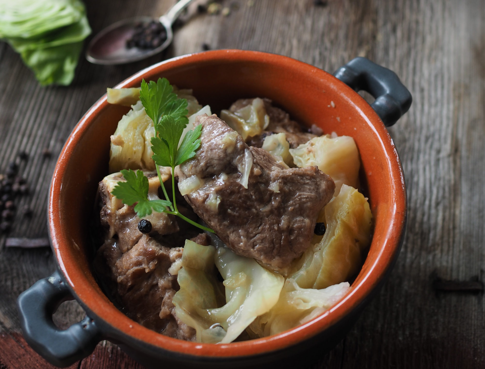

THOR'S THUNDERGUT STEW

Description
"By Odin's beard, it'll fill even the mightiest of warriors!"
Legend has it that this hearty stew is the very dish that powered Thor through countless battles, including that one time he lost his hammer for the 14th time and had to borrow a frying pan from his mother (true story). A staple in the Viking diet, this mighty concoction is slow-cooked with tender meats, hearty root vegetables, and a secret blend of spices straight from the halls of Asgard. Perfect for a cold winter night, or when you've just finished smashing a frost giant and need to refuel your thundergut.
Ingredients
- Enough meat to feed a god: Think beef, lamb, or anything that Thor might hunt down with his trusty hammer Mjölnir.
- Root vegetables: The kind of earthy goodness that grows in the realm of Midgard (carrots, potatoes, and parsnips). You'll need plenty, because who knows when the next Ragnarok will hit?
- Earthy spices: A mix of thyme, garlic, and maybe a pinch of Loki’s mischief (cumin).
- A jug of mead: Not for the stew, just to keep your spirits up while cooking
Directions
- In a cauldron (or a mortal pot if you don’t have access to Asgardian cookware), brown the meats over a blazing fire hotter than the forges of Nidavellir.
- Toss in the root vegetables with the strength of Thor hurling Mjölnir. (Okay, maybe a little gentler. No need to break your kitchen.)
- Sprinkle the spices liberally, as if you were trying to banish the frost giants from your doorstep.
- Simmer slowly, as if waiting for Loki to admit he's up to something. (Spoiler: He always is.)
- Serve in the largest bowl you have—because no Viking leaves the table hungry—and enjoy alongside a flagon of mead. (For best results, shout “FOR ASGARD!” before the first bite.)